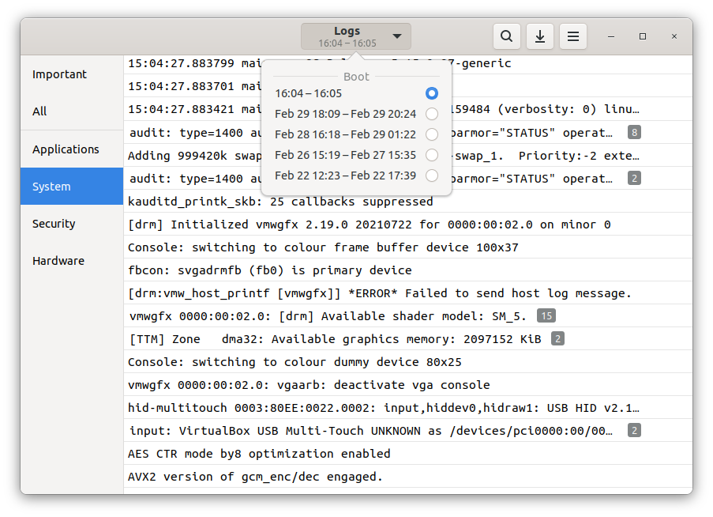

Comandos básicos de Linux
Comandos básicos, archivos y permisos en Linux.
Leer artículoAprendiendo ciberseguridad paso a paso
Un espacio donde comparto mis apuntes y prácticas de Linux, redes y otras prácticas educativas relacionadas con la ciberseguridad.
Comandos básicos, archivos y permisos en Linux.
Leer artículo
Que información contienen los registros y cómo interpretarlos.
Leer artículoAprende cómo se envían los datos desde un formulario y qué medidas ayudan a protegerlos.
Leer artículoEste blog es un espacio personal donde comparto mis apuntes y prácticas de ciberseguridad. Mi objetivo es aprender y compartir conocimientos sobre Linux, redes y seguridad informática.
Comprueba lo que has aprendido sobre Linux, redes y ciberseguridad.